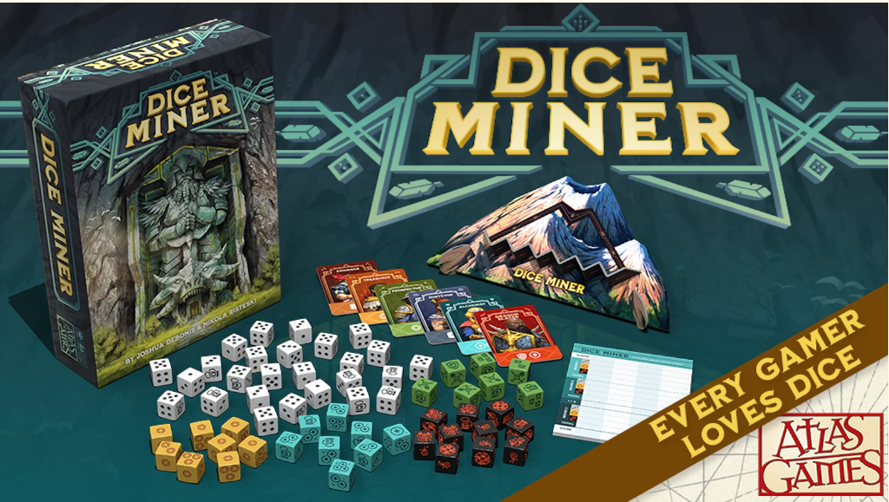

A Joy of Games


Games have been a staple in Sophia's life. Although videogames have provided plenty of fun it's boardgames that she loves most. Games like "Dice Miner" and "Cosmic Encounter" have been a large part of bonding with her friends and family. No game has been more loved than "Dungeons and Dragons" (D&D). D&D has been an amazing creative outlet and given friends and family something to bond over.